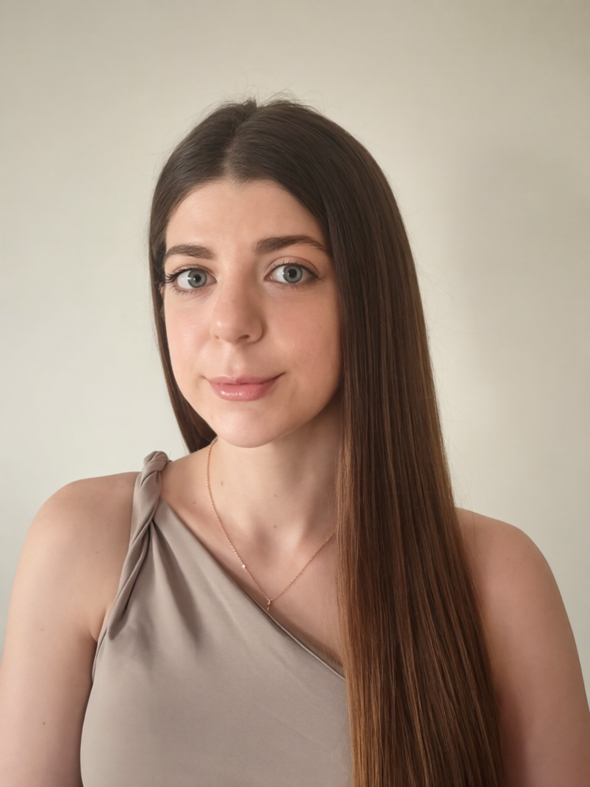

I'm a designer who works on branding, packaging, and UI/UX. My style is a mix of the organic, flowing patterns I love from styles like Art Nouveau, the clean, modern look of today's tech and a love for futuristic, tech-forward visuals. As an AI enthusiast, I like to use AI programs as a tool to help me take my design ideas as far as they can go.
My background is a mix of cultures, born in Venezuela, with Italian and Lebanese upbringing, which really shapes how I see design. Speaking English, Spanish, Arabic and Italian helps me approach projects from a few different angles, keeping my perspective multi-cultural.
I'm all about building digital worlds that feel real and break generic boundaries even slightly. If you've got a project in mind, I'd love to hear about it.
